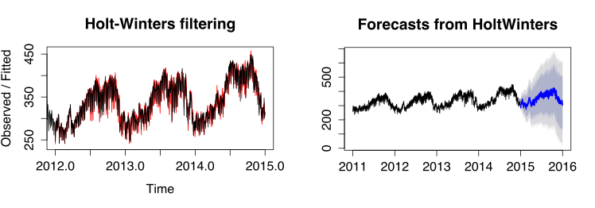

Multi-City Energy Analysis
Yiqian Jin, Denis Tan, Jing Ye
4 May 2015
This paper and its visualizations can be found at http://denistanwh.github.io
Motivation
Global energy demand is expected to rise by 37% from 2014 to 2040 (IEA, 2014). However, three quarters of the global energy supply in 2040 will still be fossil-based (IEA, 2014), exacerbating anthropogenic climate change as we attempt to meet this expanding demand. While cities will drive most of the predicted demand expansion (The New Climate Economy, 2014), they can be leading advocates on reducing per capita energy use to mitigate climate change (c40, n.d.). To this end, there are numerous global and regional networks that bring city policy makers together to facilitate the sharing of best practices to reduce their repective energy intensities. These include C40, World Cities Network, and many others.
However, cross-city collaboration on reducing enegy demand tends to be politically- and economically-driven rather than data-driven. For instance, Chinese cities, despite having vastly different climate, have attempted to glean best practices from Singapore in the energy domain (WEF, 2012). Best practices gleaned from political and economic partners, while certainly of value, may be less effective due to the intrinsic differences in factors driving energy demand. For instance, Chinese cities have a very different climate to contend with when compared with tropical Singapore. Thus, there is value in identifying clusters of cities with similar energy demand patterns to make the sharing of best practices more efficient. This provides a data-driven perspective to cross-city collaboration that is intended to augment, not supercede current political and economic networks.
Energy demand is a function of many variables, including demographics, climate, and development stage. Much work has been done on energy demand forecasting, resulting in increasingly realistic but complex models. This paper presents a data-driven approach to identifying groups of cities with similar demand pattern to optimize collaboration, as well as forecasts and visualizes short-term energy demand for one sample city of each group.
Our approach is agnostic to the underlying structural factors driving demand and deals only with the empirical demand pattern, using a simple but relatively underused clustering method for grouping and time-series method for forecasting.
Methodology
Grouping of Cities
Cluster Analysis & K-means Algorithm
To group cities, we apply cluster analysis. Cluster analysis, or clustering involves grouping objects in such a way that objects in the same group are more similar, by some pre-determined measure, to each other than to those in other groups. This is a fundamental concept in exploratory data mining, and a frequently-used method for statistical data analysis in many fields such as machine learning and pattern recognition (Kaufman & Rousseeuw, 2009).
One particular method of implementing cluster analysis is K-means clustering (Witten & Hastie, 2014). It is a simple approach to group data into K distinct, non-overlapping clusters. The following algorithm depicts K-means clustering:
- Randomly assign a number, from 1 to K, to each of the observations. These serve as initial cluster assignments for the observations.
- Iterate until the cluster assignment stops changing:
- For each of the K clusters, compute the cluster centroid. The Kth cluster centroid is the vector of the p feature means for the observations in the Kth cluster.
- Assign each observation to the cluster whose centroid is closet (where closest is defined using Euclidean distance).
To implement cluster analysis, we implemented three steps: pre-processing, grouping, and analysis.
First, we pre-processed and trimmed the raw dataset from an unbalanced panel of energy demand data of 43 cities. The dataset is obtained from: https://github.com/ecohen4/energy. We do this by dropping cities with less than a full calendar year of energy data, or that have a visually obvious number of physically-impossible, zero-valued (representing recording error) data. The trimmed dataset has 29 cities remaining. The energy demand data, in MW, was also aggregated from the half-hourly level to the daily-level to reduce the size of the dataset for quick computations. Data at the half-hourly level is unnecessarily granular for cluster analysis that spans a full calendar year. We then normalized energy demand by subtracting the mean and dividing the result by the standard deviation. This normalization ensures that data from all cities are have zero for mean and one for standard deviation, making it possible for inter-city comparison. The trimmed dataset is depicted below in Figure 1.
Figure 1: Plot of 2013 Energy Demand Data from 29 Cities
Figure 1 is visualized with the following code in R:
ggplot(data = sub, aes(x = day, y = MW, color = city)) + geom_line() + facet_wrap(~city, scales = "free")
last_plot() + scale_x_datetime(labels = date_format("%b"))
Second, we group the data from 29 cities into four groups (clusters) using the aforementioned K-means algorithm. We implemented this using the default kmeans() function in the {stat} package of the open-sourced statistical software, R (version 3.0.2).
We note various issues associated with the method applied. First, we are aware that groups obtained using the k-means method represent local rather than global optimum. To reduce the impact of this limitation, we chose to increase the number of iterations during computation to obtain stable clustering results. Specifically, we set the iteration count to 20 and simulated 10 different starting points. The result is convergent as expected. Secondly, in this approach, as in most clustering analyses, the number of clusters is pre-specified. Hence, prior knowledge of the number of groups is required. Mathematically, there are multiple tests that could determine the optimal number of groups, with different methods providing slightly different results. In this paper, we use the R function NbClust from package {NbClust} to obtain the optimal number of clusters by computing the Hubert Statistic for the clusters as well as the second differences. The Hubert Statistic is a similarity function used to determine effectiveness of clustering (Zaki, 2012). The results of the NbClust analysis is provided in Figure 2. From the test results, the Hubert Statistic performance is acceptable with three or more clusters (groups). We visually inspect the data and settled on four clusters.
Figure 2: Results of NbClust Test
Figure 2 is visualized with the following code in R:
res<-NbClust(data.6, diss = NULL, distance = "euclidean", min.nc = 2, max.nc = 10, method = "kmeans", index = "hubert")
Finally, we analysed the four groups (clusters). We did this by considering the geographic location and local climate of the various cities. This will be discussed in the Result & Discussion section.
Forecasting Energy Demand
Overview of Energy Demand Data
After clustering energy data into four groups, we turn to forecasting. For forecasting, we trim the original dataset to the 29 cities used in the clustering analysis but retain multiple years of energy data for all cities. We also aggregated the half-hourly data to the daily level to remove unnecessary granularity.
The energy demand data shows periodicity and can be said to have three components: seasonal, trend, and random component. Seasonality is defined as the tendency of time-series data to exhibit behavior that repeats itself in regular intervals. If the seasonal component is present, it can be additive (where the size of the seasonal component is constant) or multiplicative (where the size of the seasonal component is proportionate to the level of the trend). Visual inspection seems to indicate additive seasonablity. Trend represents the non-cyclical pattern of the data. The random component is the residual after seasonality and trend have been removed. Using R, we applied the decompose() function to a sample city from each of the four clusters and plotted the outcome in Figure 3.
Figure 3: Decomposition of Daily Energy Demand of Eugenia, Dakar, Louisville, and Sacramento
Holt-Winters Times Series Forecasting Algorithm
Holt-Winters is a forecasting method for dealing with time series data with both trend and seasonal components. It is an extension of the Single Exponential Smoothing method. The Holt-Winters method has two versions, additive and multiplicative, the use of which depends on the characteristics of the particular time series. We use the additive method for simplicity and since the seasonality appears to be additive. Holt-Winters predictions are obtained as a weighted average of past observed values where the weights decline exponentially so that the most recent observations contribute to the forecast more than the values of earlier observations. The additive formula of this model is as follow:
\[ \begin{align} & s_{i}=\alpha(x_{i}-p_{i-k})+(1-\alpha)(s_{i-1}+t_{i-1}) \\ & t_{i}=\beta(s_{i}-s_{i-1})+(1-\beta)t_{i-1} \\ & p_{i}=\gamma(x_{i}-s_{i})+(1-\gamma)p_{i-k} \\ \end{align} \]
Here \(\alpha, \beta, \gamma \) represent data smoothing factor, trend smoothing factor, seasonal change smoothing factor separately and their values are between 0 to 1; k is the time period. Initially, we set\(s_{0}=x_{0}\), \(t_{0}=x_{1}-x_{0}\).The prediction formula follows:
\[ \begin{align} x_{i+h}=s_{i}+ht_{i}+p_{i-k+(h\,mod\,k)} \end{align} \]
Visualiation
We visualized the data from the above cluster analysis and forecasting steps through a three step procedure using d3 (Bostock, 2013). First, we present a world map centered in the Pacific to depict the cities we considered for this project (see Figure 5). Second, we zoom in to the 4 groups of cities and present their average daily energy demand over a period of 365 days. Each group of cities are visualized in a chart (Figures 6 to 9). Third, we further zoom in to the city level and visualize the energy forecast for one sample city in each of the 4 groups. This is hidden unless the reader decides to interact with the paper by clicking the Visualize button.
This cascade of visualizations emphasizes the “drill-down” technique espoused by Schneiderman (1996) in his seminal paper on the visual information seeking mantra. This way, the first visualization provides an overarching overview before the second and third visualization take reader into greater and greater detail. At the same time, we have kept the visualizations minimalist to maximize data-ink and minimize chart-junk (Tufte, 1983).
Results & Discussion
Grouping of Cities
Table 1 and Figure 4 shows the result of clustering.
| No. | City | Cluster | No. | City | Cluster |
|---|---|---|---|---|---|
| 1 | Abidjan | 1 | 16 | Louisville | 3 |
| 2 | Eugene | 1 | 17 | New York | 3 |
| 3 | Tacoma | 1 | 18 | Omaha | 3 |
| 4 | Queensland | 1 | 19 | Springfield | 3 |
| 5 | Dakar | 2 | 20 | Tokyo | 3 |
| 6 | Honolulu | 2 | 21 | Detroit | 3 |
| 7 | Manila | 2 | 22 | Indianapolis | 3 |
| 8 | Mbabane | 2 | 23 | Philadelphia | 3 |
| 9 | Nairobi | 2 | 24 | North Little Rock | 4 |
| 10 | Singapore | 2 | 25 | El Paso | 4 |
| 11 | Antigua | 2 | 26 | Los Angeles | 4 |
| 12 | Amman/td> | 3 | 27 | Memphis | 4 |
| 13 | Chattanooga | 3 | 28 | Sacramento | 4 |
| 14 | Colorado Springs | 3 | 29 | Delhi - BRPL | 4 |
| 15 | Kansas City | 3 | - | - | - |
Figure 4: Visualization of the 4 Clusters of Cities
Note: From the figure, it is clear that the cities have been appropriately clustered according to the shape of their daily energy demand over the period of a single calendar year. Cluster 1 cities appear to have energy demand peak in January and trough in August. Cluster 2 cities appear to have a relatively flat energy demand profile throughout the year. Cluster 3 cities appear to have 2 peaks in energy demand per year in both January and August. Finally, cluster 4 cities appear to also have 2 peaks but the peak in January is much less pronounced.
Figure 4 is visualized using the following code:
ggplot(data = data.7, aes(x = day, y = MW, color = city)) + geom_line() + facet_wrap(~cluster, scales="free")
The map in Figure 5 shows the geographical location of these 29 cities.
Figure 5: Geographic Location of 29 Cities
Note: Cluster1 cities are in green; Cluster 2 cities are in purple; Cluster 3 cities are in red; and Cluster 4 cities are yellow
Cluster 1
Figure 6 depicts the energy demand profile for cluster 1 cities.
Figure 6: Cluster 1 Normalized Energy Demand Plot Over 1 Year
Note: Energy Demand is normalized by subtracting its mean and dividing the result by its standard deviation over the duration considered.
Cities in Cluster 1 are: Abidjan, Eugene, Tacoma, Queensland.
In this cluster, yearly energy pattern turns out to be “U” style, with the peak in January (boreal winter, austral summer) and the smoothly valley in August (boreal summer, austral winter). Intuitively, this pattern should correspond with cities of one of two specifications:
- Cities in the northern hemisphere that have mild summers such that air-conditioning use is not significant and winters that require some form of heating.
- Cities in the southern hemisphere that have mild winters such that heating is not significant and summers that require some form of air-conditioning use.
Eugene and Tacoma are both located in northwestern USA. Their proximity to the Pacific Coast mean that they are affected by warm currents, causing their seasons to be marked by warm, dry summers and wet, cool-to-chilly winters. Over the course of a year, their temperature typically varies from 38°F to 76°F and is rarely below 31°F or above 85°F. Hence, Tacoma and Eugene fall into the first of the two aforementioned types of cities.
Queensland is located in Australia in the southern hemisphere. The strong summers and mild winter mean that it corresponds to the second type of cities.
Abidjan, however, seems to be an outlier. Abidjan is a tropical city which should not have a ‘U’ shaped energy demand profile. This could potentially have been caused by the similarity of ‘U’ shaped profiles and flat profiles, constituting a limitation to the k-means method of clustering cities.
Cluster 2
Figure 7 depicts the energy demand profile for cluster 2 cities.
Figure 7: Cluster 2 Normalized Energy Demand Plot Over 1 Year
Note: Energy Demand is normalized by subtracting its mean and dividing the result by its standard deviation over the duration considered.
Cities in Cluster 2 are: Dakar, Honolulu, Manila, Mbabane, Nairobi, Singapore, Antigua.
In this cluster, the energy demand profile appears to be flat. In other words, the intra-year fluctuations in energy demand is much less pronounced. Intuitively, this patterns should correspond with cities with one of three specifications:
- Tropical cities that have very minimal temperature fluctuations throughout the year and are consistently warm and in need of cooling.
- Cities that have mild climates that are neither in need of cooling nor heating.
- Polar cities that have very minimal temperature fluctuations throughout the year and are consistently cold and in need of heating
Looking into the data, Singapore and Nairobi are near the equator and, thus, consistently in need of cooling year round with no need for heating. In addition, the other 5 cities all located between -30 degrees to 30 degrees latitude and have little need for heating or cooling. Hence, the relatively flat energy demand profile makes intuitive sense.
Cluster 3
Figure 8 depicts the energy demand profile for cluster 3 cities.
Figure 8: Cluster 3 Normalized Energy Demand Plot Over 1 Year
Note: Energy Demand is normalized by subtracting its mean and dividing the result by its standard deviation over the duration considered.
Cities in Cluster 3 are: Amman, Chattanooga, Colorado Springs, Kansas City, Louisville, New York, Omaha, Springfield, Tokyo, Detroit, Indianapolis, Philadelphia.
In this cluster, the energy demand profile appears to have 2 peaks, one during summer and one during winter. Intuitively, this pattern should correspond with cities need heating during winter and cooling during summer.
All cities in this cluster are located between the 30 and 60 degrees latitude. This supports the hypothesis that both heating and cooling is needed at different times of the year.
Cluster 4
Figure 9 depicts the energy demand profile for cluster 4 cities.
Figure 9: Cluster 4 Normalized Energy Demand Plot Over 1 Year
Note: Energy Demand is normalized by subtracting its mean and dividing the result by its standard deviation over the duration considered.
Cities in Cluter 4 are: City of North Little Rock, El Paso, Los Angeles, Memphis, Sacramento, Delhi - BRPL.
In this cluster, yearly energy pattern turns out to be “N” style, with the much less pronounced peak in January (boreal winter, austral summer) when compared with Cluster 3 and a peak in August (boreal summer, austral winter). Intuitively, this pattern should correspond with cities of one of two specifications:
- Cities in the southern hemisphere that have milder summers than those in Cluster 3 such that air-conditioning use is not significant and winters that require some form of heating.
- Cities in the northern hemisphere that have milder winters than those in Cluster 3 such that heating is not significant and summers that require some form of air-conditioning use.
Geographically, North Little Rock, El Paso, Memphis, Sacramento and Los Angeles are all in the southern and western region of USA. These cities have less harsh winters than those of Cluster 3. Delhi, although located separated from other cities in this group, occupy a similar latitude, and hence, has a similar climate. These cities all correspond to the second specification above.
Forecasting Energy Demand
We picked Eugene, Dakar, Louisville, and Sacramento to represent Cluster 1, 2, 3, and 4 respectively. Through application of the Holt-Winters forecasting algorithm, we obtained a model for each of the four cities and forecasted the energy demand for 365 days for each city. We then analyzed the model fit using the Box-Ljung residual test. The results are summarized in Table 2. The results are acceptable, indicating that the forecasting model is feasible.
Table 2: Summary of Box-Ljung test results
| City | Cluster | X-squared | Degree of Freedom | P-value |
|---|---|---|---|---|
| Eugene | 1 | 1365.707 | 20 | 2.2e-16 |
| Dakar | 2 | 1171.423 | 20 | 2.2e-16 |
| Louisville | 3 | 1926.477 | 20 | 2.2e-16 |
| Sacramento | 4 | 915.5914 | 20 | 2.2e-16 |
We present the forecasting results of each of the four cities separately, below. The first cluster’s representative, Eugene exhibits the 'U' profile with a distinct upward trend (see Figure 10).
Figure 10: Holt-Winters Forecast for Eugene (Cluster1)
Note: Left chart depicts comparison between model (red) and original data (black). Right chart depicts the 365-day forecast of daily energy demand of Eugene. Original data spanned 4 calendar years from 2010 to end of 2013.
Interact with the data by clicking below:
The second cluster’s representative, Dakar, has both a general upward trend and a relatively flat profile though a seasonal (cyclical) pattern in the middle of the year can be observed.
Figure 11: Holt-Winters Forecast for Dakar (Cluster 2)

Note: Left chart depicts comparison between model (red) and original data (black). Right chart depicts the 365-day forecast of daily energy demand of Dakar. Original data spanned 4 calendar years from 2011 to end of 2014.
Interact with the data by clicking below:
The third cluster’s representative, Louisville, has significant periodicity on a yearly basis (see Figure 12). As is the case for cities in Cluster 3, Louisville has two energy demand peaks, a more pronounced peak in the summer and a less pronounced peak in the winter.
Figure 12: Holt-Winters Forecast for Louisville (Cluster 3)
Note: Left chart depicts comparison between model (red) and original data (black). Right chart depicts the 365 day forecast of daily energy demand of Louisville. Original data spanned 3 calendar years from 2011 to end of 2013.
Interact with the data by clicking below:
The fourth cluster’s representative, Sacramento, shows a large peak during the boreal summer. Sacramento’s energy demand profile shows a slight downward trend from 2007 to 2013 (see Figure 13).
Figure 13: Holt-Winters Forecast for Sacramento (Cluster 4)
Note: Left chart depicts comparison between model (red) and original data (black). Right chart depicts the 365 day forecast of daily energy demand of Sacramento. Original data spanned 7 calendar years from 2006 to end of 2013.
Interact with the data by clicking below:
We also verified that the forecast errors obtained by deducting the fitted data from the original data are normally distributed (see Figure 14).
Figure 14: Forecast errors
Note: Top left: forecast errors for Eugene; top right: forecast errors for Dakar; bottom left: forecast errors for Louisville; bottom right: forecast errors for Sacramento
Conclusion
Using energy demand data from 43 cities, we trimmed the data down to 29 cities and stratified them into 4 groups based on similarity in the shape of their energy demand curves. We then applied a Holt-Winters time-series algorithm to forecast the energy demand over a period of 365 days for each chosen city. Finally, we visualized the energy data and forecasts using a cascading “drill-down” approach. This approach allows us to first depict an overview of the data before zooming into the granular details, in line with Schneiderman’s visual information seeking mantra. This paper introduces a data-driven method to group cities based on their energy demand profile to make cross-city collaboration on energy demand management more effective.
References
Bostock, M. (2013). Data-driven Documents. Retrieved January 10, 2015, from: http://d3js.org/
Chatfield, C., & Yar, M. (1988). Holt-Winters forecasting: some practical issues. The Statistician, 129-140.
c40. (n.d.). Why Cities? Ending Climate Change Begins in the City. Retrieved May 01, 2015, from: www.c40.org/ending-climate-change-begins-in-the-city
International Energy Agency. (2014). World Energy Outlook 2014 Executive Summary. Retrieved May 01, 2015, from: http://www.worldenergyoutlook.org/publications/weo-2014/.
James, G., Witten, D., & Hastie, T. (2014). An Introduction to Statistical Learning: With Applications in R.
Johnson, L. A., & Montgomery, D. C. (1974). Operations research in production planning, scheduling, and inventory control (Vol. 6). New York: Wiley, Chicago.
Kaufman, L., & Rousseeuw, P. J. (2009). Finding groups in data: an introduction to cluster analysis (Vol. 344). John Wiley & Sons.
Shneiderman, B. (1996, September). The eyes have it: A task by data type taxonomy for information visualizations. In Visual Languages, 1996. Proceedings., IEEE Symposium on (pp. 336-343). IEEE. Chicago. Retrieved April 1, 2015, from: http://drum.lib.umd.edu/bitstream/1903/5784/1/TR_96-66.pdf
The New Climate Economy. (2014). Cities: Engines of National and Global Growth. Retrieved April 20, 2015. from: http://newclimateeconomy.report/cities/
Tufte, E. R., & Graves-Morris, P. R. (1983). The visual display of quantitative information (Vol. 2). Cheshire, CT: Graphics press.
World Economic Forum. (2012). What lessons can China learn from Singapore. Retrieved May 05, 2015, from: https://agenda.weforum.org/2012/11/what-lessons-can-china-learn-from-singapore/
Zaki, M. (2012). Chapter 18: Clustering Validation. Cambridge University Press. Retrieved May 05, 2015, from: http://www.cs.rpi.edu/~zaki/www-new/uploads/Dmcourse/Main/chap18.pdf